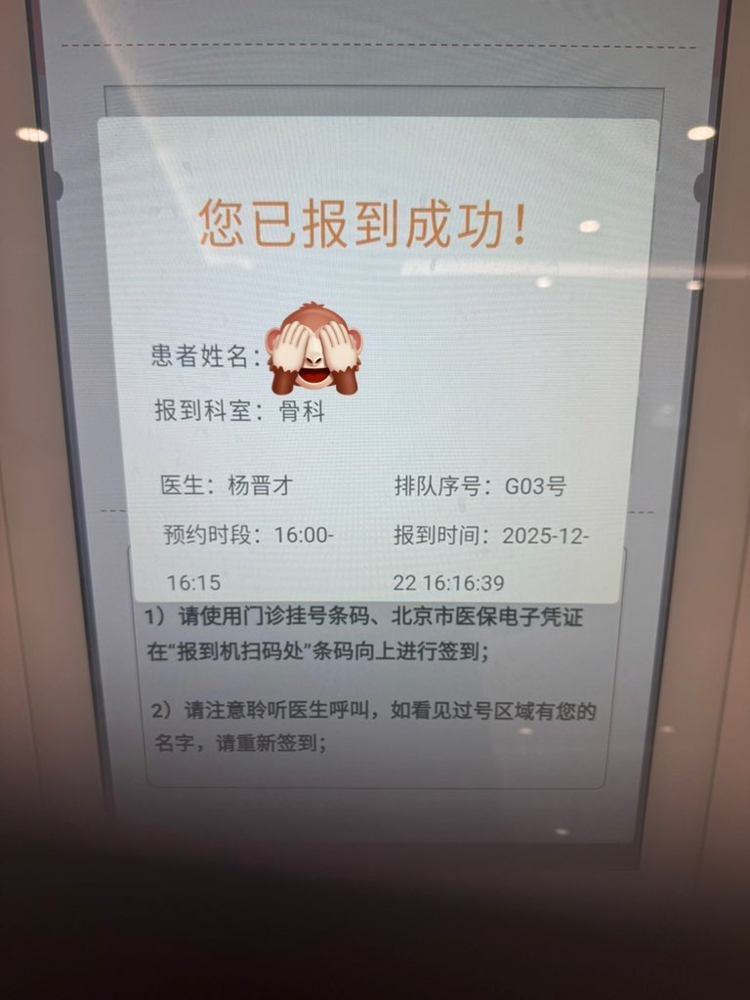

Rhinnschneevall
@RainduRhinns
我做S就这样

绳师48号
@shibari48
《一个S因为没有安全词而受伤的故事》
先叠个甲，没有冒犯所有brat的意思。
事情是这样的，上周来了个约绳的人，她说自己是brat。
这本身很正常，我这里来过无数brat了。
于是我和她做了各种知情同意的确认，给她设好了安全词（红绿灯体系）。
开始玩绳之后，她： https://t.co/t3tkjpPFU9